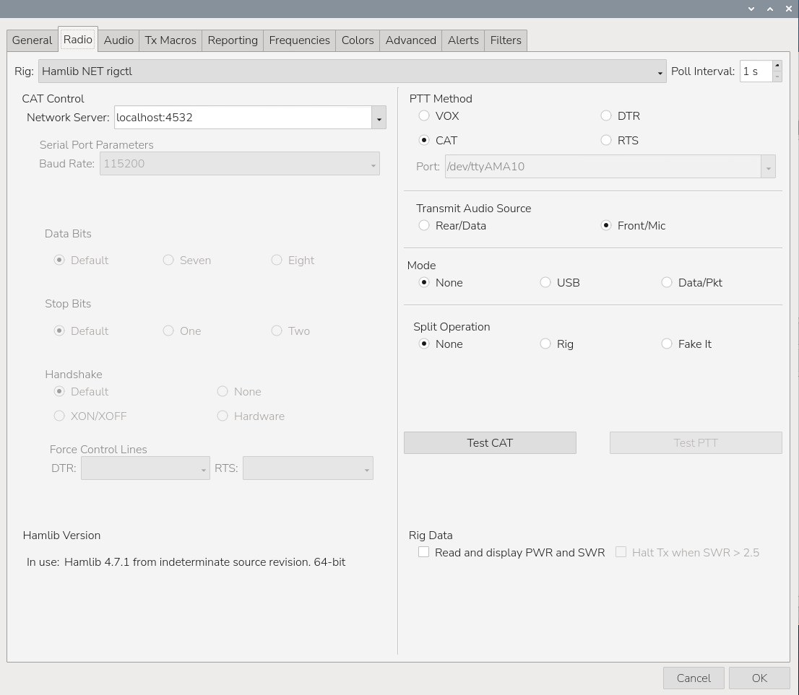
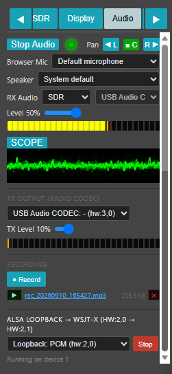
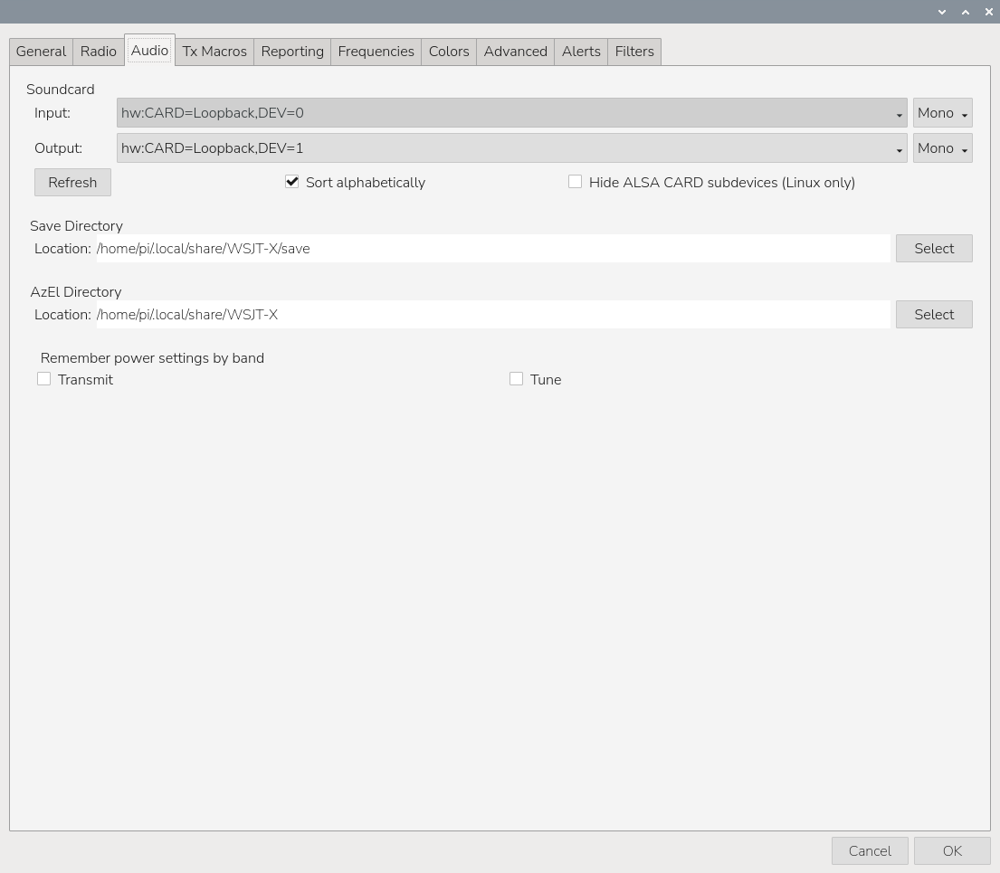

|
<< Click to Display Table of Contents >> Navigation: »No topics above this level« |
Additional amateur radio software provided with RigPi Station Server is available from the Raspberry Pi Desktop. Select Pi Menu > Ham Radio to access the installed applications.
WSJT-X, JS8C and Fldigi can use the RigPi audio system for receive and transmit audio. Audio can be connected through a radio’s built-in USB audio CODEC through the RigPi Audio board for radios that do not provide their own CODEC , or through an external dongle.
WSJT-X, written by Joe Taylor, K1JT, provides reliable digital communications under extreme weak-signal conditions. WSJT-X Improved, a clone of WSJT-X, is installed on RigPi Station Server.
RigPi and WSJT-X can share radio frequency and mode information through Hamlib. Contacts logged by WSJT-X can also be transferred automatically to the RigPi Log.
From the Raspberry Pi Desktop, open the applications menu and select Ham Radio > WSJT-X.
The first time WSJT-X starts, you will be asked to enter your call sign and grid locator.
Before configuring WSJT-X, start RigPi Station Server and connect RigPi to the radio you want to use.
In WSJT-X, select File > Settings > Radio and use:
Rig: Hamlib NET rigctl
Network Server: localhost:4532
The Network Server port depends on the RigPi account/radio being used:
•Radio 1 — 4532
•Radio 2 — 4534
•Radio 3 — 4536
•Radio 4 — 4538
Additional radios continue the same pattern, increasing the port number by 2.

Use Test CAT to confirm communication with the radio. When CAT communication is working, use Test PTT to confirm transmit control.
Some radios do not support PTT through CAT. For these radios, select Hamlib GPIO from the H/W PTT menu in RigPi Advanced Radio settings. The WSJT-X CAT PTT setting is not used when Hamlib GPIO controls PTT.

RigPi uses ALSA audio devices to exchange receive and transmit audio with WSJT-X. In RigPi SDR Audio Panel the Audio Start button, then scroll to the bottom on the Audio Panel. Select Loopback: PCM (hw 2,1). Click Start.

In WSJT-X select the RigPi Loopback device for WSJT-X audio.
The receive path is:
Radio/SDR → RigPi → ALSA Loopback → WSJT-X
The transmit path is:
WSJT-X → ALSA Loopback → RigPi → radio CODEC → transmitter
For WSJT-X Input, select:
hw:CARD=Loopback,DEV=0
For WSJT-X Output, select:
hw:CARD=Loopback,DEV=1
WSJT-X may display the device as an ALSA hardware device rather than using the plughw: name. This is normal.
Tune the radio to an active WSJT-X frequency. Signals should appear in the WSJT-X waterfall and should decode normally.
If signals are visible in RigPi-SDR but not in WSJT-X, check the WSJT-X Input audio-device selection.
Click Tune in WSJT-X.
RigPi routes the WSJT-X transmit audio through its audio system to the selected radio CODEC or RigPi Audio board.
While Tune is active:
1.Confirm that the radio switches to transmit.
2.Confirm that the RigPi TX audio meter shows audio.
3.Check the radio’s ALC indication.
4.Adjust the RigPi transmit audio level if necessary.
Use enough audio to obtain proper transmitter output without excessive ALC.
After Tune is working correctly, WSJT-X is ready for normal digital-mode operation.
Fldigi is a multi-mode digital communications program written by Dave Freese, W1HKJ, and team.
For radio control, configure Fldigi to use:
Rig: Hamlib NET rigctl
Use the RigPi rigctld port assigned to the selected radio.
For audio, select:
Configure > Sound Card > Audio > Devices
Use the same RigPi audio devices described in the WSJT-X section above.
When RigPi is controlling your radio, contacts logged in WSJT-X or Fldigi can be transferred automatically to the RigPi Log.
In RigPi, open:
SETTINGS > Accounts > Account Editor
Enable the appropriate Sync options for the logging functions you want to use.
Use the same radio and audio connections described above for WSJTX.
TQSL can be used to sign and upload contacts to ARRL Logbook of The World (LoTW).
Export your log, or contacts in your log, using Export for LoTW or Export Selected Q's for LoTW in the Log hamburger menu.
Start